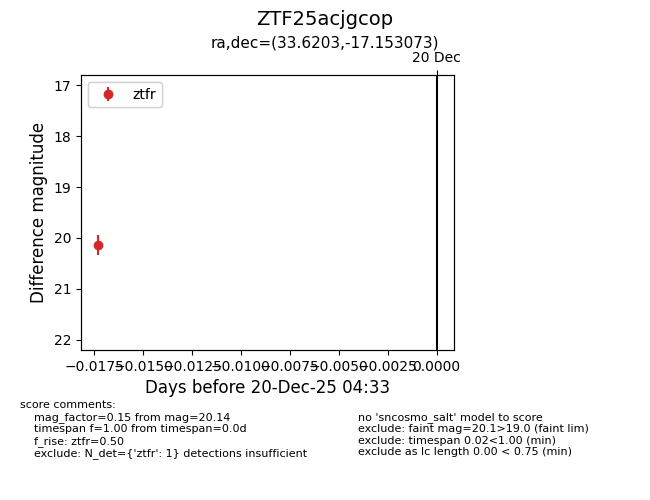
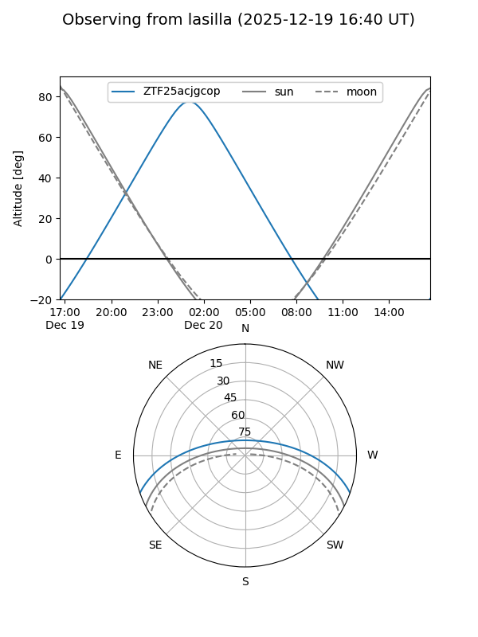
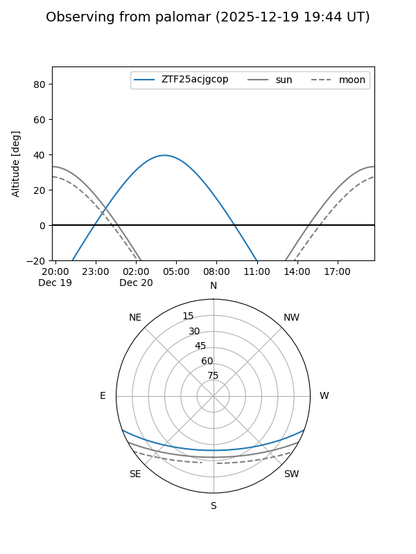

ZTF25acjgcop
Target ZTF25acjgcop at 2025-12-20 04:34
Aliases and brokers:
FINK: fink-portal.org/ZTF25acjgcop
Lasair: lasair-ztf.lsst.ac.uk/objects/ZTF25acjgcop
ALeRCE: alerce.online/object/ZTF25acjgcop
alt names
ZTF25acjgcop (ztf,fink_ztf)
Coordinates:
equatorial (ra, dec) = 33.6203,-17.15307
equatorial (HMS+DMS) = 02:14:28.87,-17:09:11.06
galactic (l, b) = (189.7658,-68.38263)
Flags:
Photometry:
last ztfr=20.14
1 ztfr detections
Lightcurve

Visibility


Additional plots